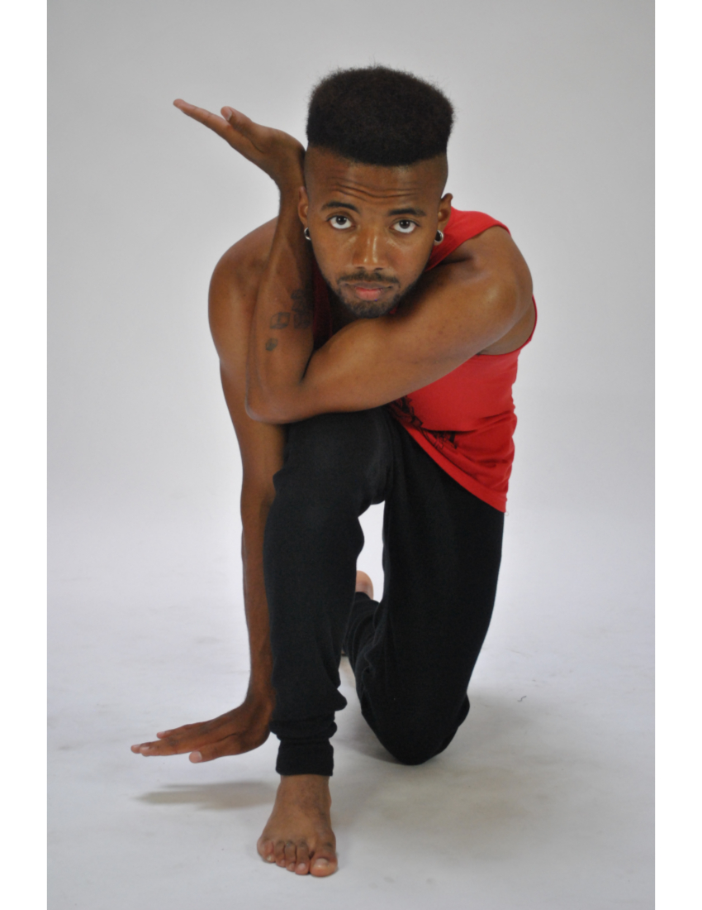
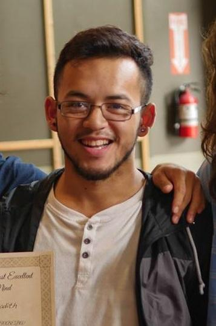
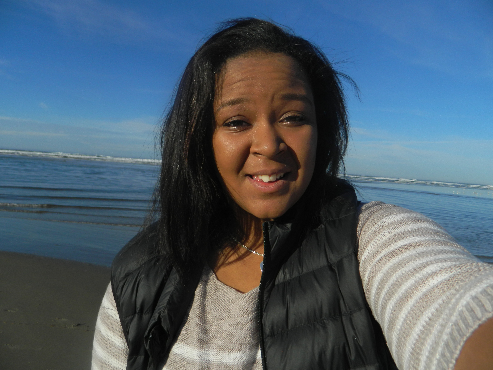
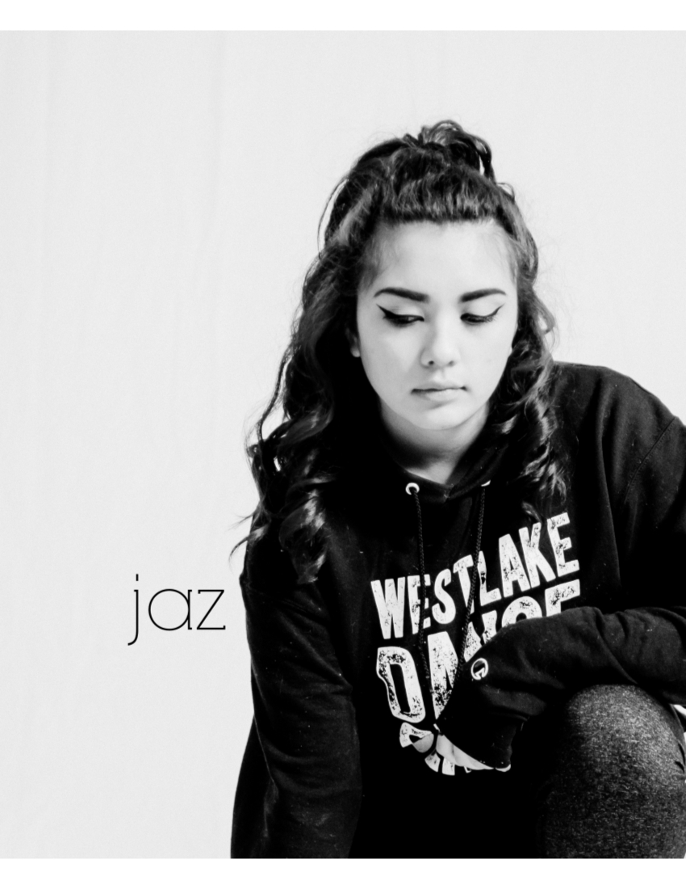
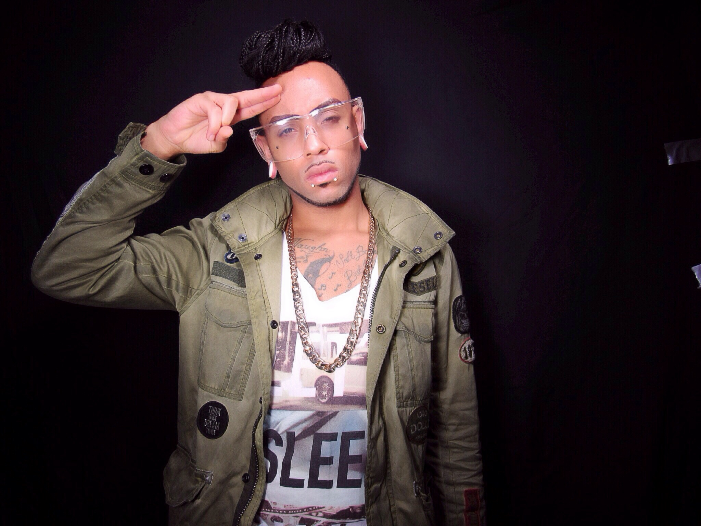

Jeffie Lou
Jeffie Lou Jackson Thorn has taught Hip-hop, Lyrical and Jazz dance in many Seattle/Metro area studios. Her Past Dance Teams Allure, JAMS and Smooth Elements have performed at Sonic games, Summer Jam, etc. She studied with the Dupree Dance Company and the Alvin Ailey Dance Company, went to school at the New York School of the Arts, and finished her degree in Dance and Education at Washington State University. She teaches "Dance Grooves and SYTYCD" at West Seattle Health Club where she has been for 14 years. She has taught with Stage Struck in West Seattle as a lead teacher and choreographer for 10 years. Jeffie Lou has been a certified teacher and taught in a number of different schools as a Classroom Teacher, Performing Arts Teacher and most recently with Cascade Middle School in Burien with their Physical Education Department teaching Dance. Also, as a teaching artist with Powerful Schools/YMCA for the past 6 years. This work has the process of going to various different schools during the school day and working with the classroom teachers on bringing dance and movement to their individual curriculum. She is the Director and choreographer for D&G Dance, a Non-Profit Dance studio in South Seattle. She is the Director of BEATFEET Dance Squad that performs at many Seattle festivals and events such as Bumpershoot, The Harlem Globetrotters, Seattle Storm games and Breath Deep Seattle. "Dance will always be part of my life. I am always excited to share, teach, dance and groove with ALL Dancers no matter age or ability. In this, we learn the essential importance of moving, learning and seeking the passion of DANCE."
Kerissa
Kerissa has been dancing since she was 10 years old. She trained in tap for five years, and then joined her High School Dance team, where her favorite dances were lyrical and novelty. She took jazz classes for four years in college, and then revived her love for dance a few years later, in 2004, when she started taking classes from Jeffie Lou. She started teaching summer camps with Jeffie Lou in 2007, and has been a part of D&G since its inception. She still dances weekly with Jeffie Lou at West Seattle Health Club. She is also Delaney's mom, who you will see around the studio, and is also a future D&G Dancer.
Stephanie
Originally from San Diego, CA, Stephanie grew up at Danceology Performing Arts Campus under the direction of Nicole Lucia. She was trained intensively in Jazz, Ballet, Modern, Tap, Musical Theater, Hip Hop and Contemporary. She has participated in many conventions from 2001 to 2012 included NYCDA, LADF, PULSE, ACDFA and HHI (Hip Hop International). She was a part of Unity Dance Ensemble in San Diego and Los Angeles, CA under the direction of Tessandra Chavez, who has choreographed for So You Think You Can Dance, Abby Lee's Ultimate Dance Competition and she is now an a Emmy Award Winner for her Choreography on "Dancing with the Stars." Stephanie has attended a Hip Hop style, Locking Camp taught by "Original Generation" lockers in 2012 and 2013. Her college dance education has a range from Cornish College of the Arts, Orange Coast College and a BFA in modern dance from Utah Valley University; Taking that education she has taught in studios and schools in Jazz, Ballet, Contemporary and Modern techniques from 2007 to present day. Stephanie was a part of two local dance companies' in Salt Lake City, Utah, UDO (Utah - Urban Dance Organization) and United We Dance (Underground crew). She has choreographed and taught for her high school dance team to middle schools and choreographed pieces in college's for student dance concerts and outside benefit concerts. She has experienced many different areas of the west coast dance world and has learned a great deal about performing, choreographing and teaching. And now, she has started her own contemporary-modern dance company in 2014, Dore Dance Company, originally based in San Francisco, CA; which provides dance education and performance workshops for children as well as young professionals in the bay area. She now resides in Seattle, entering the dance community with new insights and an open mind.
Robin
I was born in Livingston Izabal, Guatemala raised in Brooklyn/Queens and currently living in Seattle. I have performed and took part in 15 Productions from Musicals to plays Such as God Lives in Glass (Broadway Bound) to The Wiz (NW Tap). Showcased in Half-times games at the Show-ware Center (Demolition Crew North), Performing Art Center Of Wenatchee (SD Prism), The Wrek-Room Dance Battle (Demolition Crew North),Umjoa Festival (2012)(2014), Night of Beats (2011),Salsa n Seattle, Urban Impact's 25 Anniversary and Urban Impact Art House grand Opening, Open Mic's For UW,SPU,SSCC and Youth Speaks, Cultivate, to Opening for Christian Artist's and Rappers such as Mike Day, Celestine Rap, and Illaphant. Robin has been featured in 10 soon to be 13 Videos Ranging from Promo's for Events, Shows to Music videos from Seattle to LA. Trained with SD Prism, Pacific Northwest ballet, NW Tap Connection, Demolition Crew (International Crew know for Music in SYTYCD and Showcases for WOD), and The Good Foot. I have taught over 30 Workshops and Classes from L.A, Walla Walla, Guatemala, Academy’s/ Public Schools, Community Centers.
Simon
I was born in Providence, Rhode Island and grew up in Seattle. I began my breakdance journey in '09 at Mercer Middle school taught by Jeromeskee of Massive Monkees/Rock Steady crew and Fever one of Rock Steady crew/DVS, I began teaching in 2012 at Franklin High school. I have performed and showcased for Bagley write Theater, franklin, south shore, jefferson community center, beacon rocks festival, beacon hill festival, rainier community center, Ethnic Cultural center, Chihuly Glass and Garden, Youngstown Performing Arts center, the list goes on. I was then introduced to all styles/hip hop through Robin Rojas in 2013, since then I have pursued a life of dancing i could never imagined. I have had my fair share of teaching opportunities Franklin High School, Jefferson Community center, Mercer Middle School, and at the Massive Monkee Studio. throughout the journey I have encountered several dance styles such as breakdancing, popping waving, tutting, house, choreo, & freestyle I currently represent two crews: Catch em All and Legion North West. Dance has officially made me who I am today.
Kiana
My name is Kiana Jackson Thorn, I was born and raised in Seattle Washington. I've preformed dance and Broadway shows with Stage Strucked since I was 4. I have also been apart of Jeffie Lou s D&G dance studios since the beginning. I started choreographing four years ago and have working during school, and summer camps for five years. Also I have taken part in dance conventions like MOHH for many years as well.
Jaz
My name is Jasmine Eliana Vaughn AKA "Jaz" and I am currently training and performing for Westlake Dance Center. I was born in Las Vegas and ended up in Seattle... Jeffie practically raised me (dancing wise) and I've been taught by her since day 1. I've also been trained for 8+ years and ended up in the Hip-Hop community because It seemed to fit me more. I attend many conventions such as Monsters of Hip-hop, JUMP, Nuvo & The Pulse. I take classes with NappyTabs, Luther Brown, Tony Testa, Chonique, Kevin Maher, Lissete, Nick Demoura, Willdabeast, Phi (JBWKEEZ) & Etc. I've taught many classes at Burien Dance Theatre, Teach my own class during school hours at Big Picture middle school and I am now officially a dance assistant/teacher at Stage Struck and D&G. My goal in life is to spread the passion and love for dance to people all ages.
Ruthie

Ruthie Hunt is originally from Kalispell, MT where she trained in various styles such as: Ballet, Jazz, Contemporary, Hip-Hop, etc. She trained under Carol Jakes, Marisa Roth, and Natalie Molter at The Northwest Ballet School and Company. Where she was a soloist member in the Northwest Ballet Company. Through NWB co she was casted in various productions such as Clara in "The Nutcracker" and Sapphire Fairy in "Sleeping Beauty". In 2011 Ruthie focused her artistry in Contemporary and Hip-Hop, under the direction of Amy Arriaga at Dance Elements. At Dance Elements she was a founding member of a Jazz/Contemporary company "The Movement", and a member of "Elements Collide" a Hip-hop based company. Both companies performed at events and competitions all over Montana and Idaho. In 2015 she moved to Seattle, WA to pursue her love of dance. Ruthie was a part of "Black Floor Collective", a Jazz/Lyrical/Contemporary/Musical Theater company under the direction of Heather McBreen and Sheri Lewis, where she performed at various shows across Seattle. She is also a current member of Hannah Wintrode's Hip-Hop training company "The Westsiders". Her main goal in class is to unlock emotion and character through movement in a safe and warm environment.
Guest Choreographer - Chris LeVaughn
A graduate from Cornish College of the arts in musical theater. Chris has been choreographing for over 10 years. From all different age ranges to all different group sizes and all different styles of dance. Hip-hop, jazz, modern, vaudeville, and ballet you name it, he has done it. He currently teaches dance to K-5th grade and dance fitness classes for adults. Chris has worked with Jeffie on several occasions for summer camps and other special events creating a successful and creative collaboration. Other than his dance Chris is committed to his music career where he performs as a dancer and singer around the country.
Guest Choreographer - Vanessa Villalobos
A performing artist, instructor, and choreographer from Lima, Peru. She received her Dance and Theatre degree from the U.W., has a M.F.A. in Arts Leadership from Seattle University and worked in NY for 7 years as an actress and professional dancer, specializing in Dancesport's Theatre Arts division. Her film credits include "MadHot Ballroom" highlighting her work with Dancing Classrooms and Walt Disney's "Enchanted" where she was Locally Vanessa teaches Salsa, Ballroom and AfroPeruvian dance to adults and youth at West Seattle's Kenyon Hall on Monday nights. Her arts & entertainment business, Balorico LLC, offers First Dance Wedding lessons and choreography as well as special event choreography for Quinceaneras/Sweet 16, talent shows and pageants. Vanessa is on faculty for STG's Dance This summer camp and is in her 3rd year of working with Jeffie Lou's So You Think You Can Dance Camp.